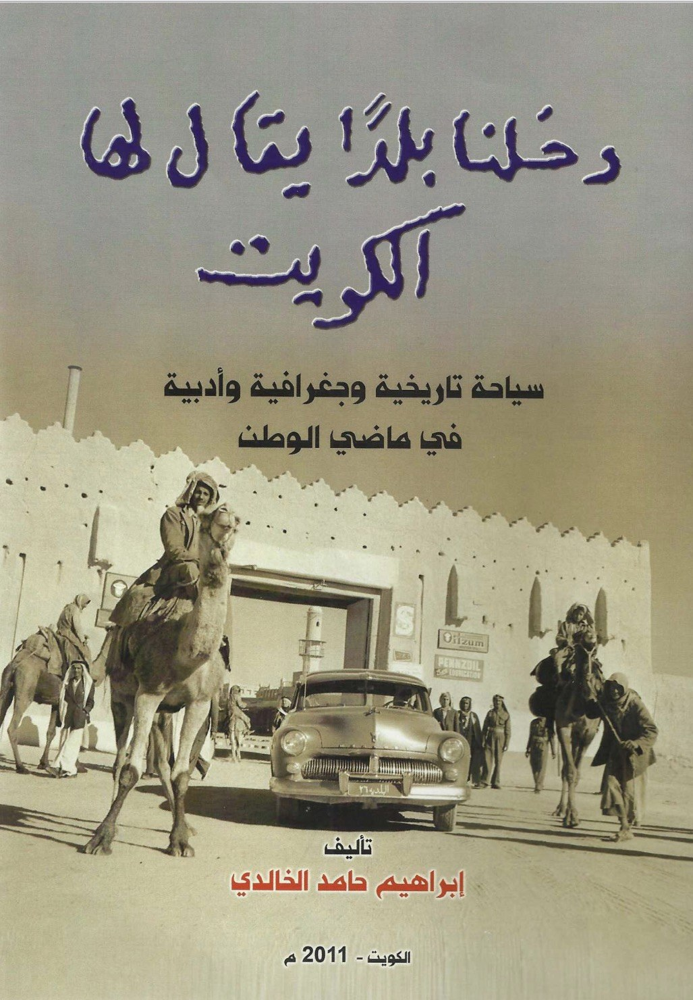

Published 2011 · Book pages, by Ibrahim Hamed Al-Khalidi, Kuwait, 2011
Dakhalna Baladan Yuqal Laha Al-Kuwait: the Al-Qatami pages
What it is
Page 134 lists the boom Fath Al-Khair, owner Abdulaziz bin Abdulwahab bin Qatami, and the baghla Al-Badri, owner Abdulwahab bin Abdulaziz bin Qatami. Page 140 describes Abdulaziz bin Abdulwahab Al-Qatami as the brother of the famous nakhuda Eissa Al-Qatami, author of Dalil Al-Muhtar, who trained his sons to command ships, several of whom succeeded him. Page 154, on the 1938 Legislative Council, names young Mohammed Abdulaziz Al-Qatami as head of the coast guard force and Abdulwahab Eissa Al-Qatami as head of the Municipality. Page 210 says Dalil Al-Muhtar was written by Eissa Al-Qatami and printed outside Kuwait in 1942, and that ship owners carried it to find their way.
Why it matters
One published book that ties together the family’s ships, the brothers Eissa and Abdulaziz, the sons who succeeded Abdulaziz at sea, and the family’s roles in 1938.
Page copies


Notes
Page 210 gives 1942 for the printing of Dalil Al-Muhtar. The site lists the edition of 1950; 1942 may be an earlier printing. Only the first pages are shown here. Family members who sign in can see all 5 pages.
Sources
Ibrahim Hamed Al-Khalidi, Dakhalna Baladan Yuqal Laha Al-Kuwait: siyaha tarikhiya wa-jughrafiya wa-adabiya fi madi al-watan, Kuwait, 2011
How this text was made: Photographed from the printed pages.
Open in the interactive site